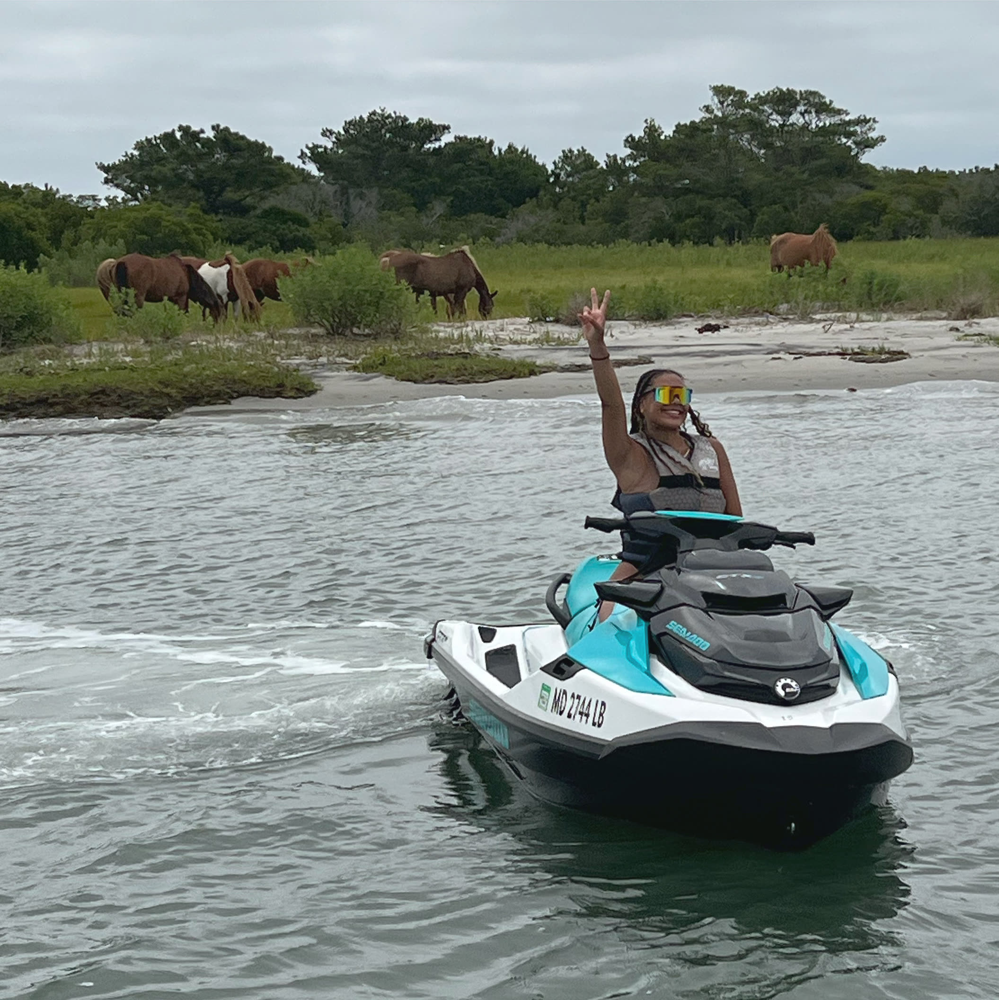

The best places to see dolphins in Ocean City, MD are the Ocean City Inlet, the nearshore Atlantic just off the beach, and the bay-side waters along Assateague Island. Bottlenose dolphins are present from late spring through early fall, with peak sightings between late May and early September. Early morning and late afternoon, when the water is calmer and boat traffic is lighter, are the best times to spot a pod.
Dolphins are one of the most-asked-about wildlife sightings in Ocean City, right alongside the wild horses of Assateague. The good news is they are not rare. The Atlantic bottlenose dolphin (Tursiops truncatus) is a year-round resident of the mid-Atlantic, and the same pods often work the same feeding zones day after day during the season. Once you know where to look, sightings happen more often than not.
This guide breaks down the four best spots to see them from the water, the times of day that produce the most consistent sightings, and what to do (and what not to do) when a pod shows up next to your boat or jet ski.
1. The Ocean City Inlet

The Ocean City Inlet is the channel that connects the Atlantic Ocean to the back bay. Tide changes funnel huge volumes of baitfish through this narrow gap several times a day, which is exactly why dolphins post up here. If you only have time to check one spot, this is it.
Time your visit to the incoming tide. Dolphins follow the bait, and the bait follows the moving water. On a strong incoming tide, you can often see pods working the surface within a few hundred yards of the jetties.
2. Nearshore Atlantic, North of the Inlet
If you are on a charter or a private vessel that goes oceanside, the stretch of Atlantic from the Ocean City Inlet north toward 9th Street is a reliable dolphin zone. Pods often patrol the first quarter-mile off the beach in 10-20 feet of water. Lifeguards and surfers see dolphins from shore here all summer long.
Note: OCA Watersports jet skis and pontoon boats stay inside the bay and run south toward Assateague. Oceanside dolphin watching is a different trip type, typically aboard a dedicated dolphin or sightseeing cruise.
3. Bay-Side Along Assateague Island

The bay-side of Assateague is the dolphin spot most OCA riders end up seeing. The Famous 6 Mile Ride runs the length of the bay-side from the inlet south to the Verrazano Bridge, passing through several deeper channels and grass flats where dolphins hunt for menhaden and mullet.
Riders on the 6 Mile Ride regularly come back to the dock with the same story: a pod surfaced 30 feet off the bow, swam alongside for a minute, then peeled off into deeper water. It does not happen on every ride, but it happens often enough that we never call it lucky anymore.
The added bonus on this route: you might see dolphins and the wild horses of Assateague in the same trip. We wrote about the horses in detail in How to See Wild Horses on Assateague Island from the Water.
4. Sinepuxent Bay (South of the Verrazano)
South of the Verrazano Bridge, Sinepuxent Bay opens up into wide, shallow flats. This is the southern end of the OCA pontoon boat range and a quieter zone with less traffic. Dolphins push up into Sinepuxent during peak summer, especially when bait is running thick along the Assateague shoreline.
Because there is more open space here, you sometimes see pods of 5-10 animals rather than the smaller groups closer to the inlet. If your pontoon group has a few hours and wants the highest odds of an undisturbed sighting, point south.
Best Time of Year and Day
Time of year. Late May through early September is the peak. June and August are typically the most consistent months. Sightings still happen in May and October but on lower frequency.
Time of day. Early morning (8-10 AM) and late afternoon (4-6 PM) are the windows we recommend. At those times, the water is calmer, boat traffic is lighter, and dolphins are most actively feeding. Mid-day is fine too. It just means working harder to spot a fin through the chop.
Tide. Incoming tide near the inlet is the single best condition. Outgoing tide pulls dolphins out into the ocean. Slack tide is the quietest stretch.
Dolphin-Watching Etiquette (and Federal Law)
Bottlenose dolphins are protected under the Marine Mammal Protection Act. NOAA Fisheries asks all boaters and jet skiers to follow these rules:
- Stay at least 50 yards (150 feet) away. Use binoculars or your camera zoom for a closer look.
- Never feed them. Federally illegal and it conditions them to approach boats, which gets them hurt.
- Do not chase or corner them. If you see a pod, parallel the direction they are swimming. Do not cut them off.
- Idle your engine when a pod is nearby. Sudden speed changes can scare them or injure surfacing animals.
- Limit your viewing to 30 minutes or less, then move on so the pod can feed and rest.
If a dolphin approaches your vessel on its own, idle, sit still, and enjoy the moment. That is the magic version of the encounter and it happens more often than you would think.
How to Maximize Your Odds
- Pick the right trip. The 6 Mile Ride on a jet ski covers the most active dolphin water in a 70-minute window. A pontoon boat rental gives you a slower, longer trip with the largest boating area in Ocean City so you can drift and watch.
- Go early or late. Aim for the first morning slot or the last afternoon slot of the day.
- Watch the birds. Diving gulls and pelicans usually mean a bait ball below. Dolphins are almost always nearby.
- Scan the horizon. Dorsal fins look like small black triangles. They surface for 1-2 seconds at a time. Look for the smooth roll motion rather than a splash.
Book Your Trip
OCA Watersports is at 12817 Harbor Rd, Ocean City, MD 21842, with direct bay access to the inlet, Assateague Island, and Sinepuxent Bay. Whether you are out there for the dolphins, the wild horses, the 6 Mile Ride, or all three at once, we have you covered.
Book a jet ski online or call 410-629-RIDE (7433) for pontoon boat reservations. Check our deals and coupons page for current seasonal offers before you book.